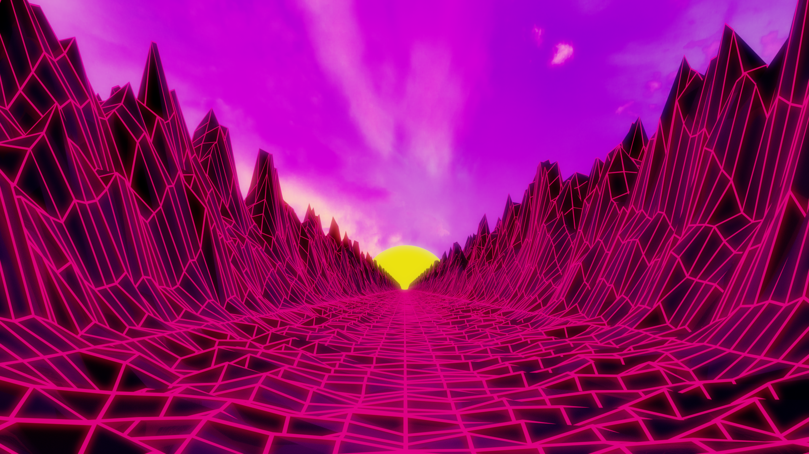

Hello there I am writing about this wallpaper that I made and I really enjoy this. I made it all in blender obviously and It actually really came out better than anything I could ever hope for. I started out by using the landscape plugin to generate the mountains that you see at the sides. After that I then created the bottom floor but only to the middle because then I used a mirror modifier and also applied it. I then labourisly went through and connected the seam down the middle becuase I had genrated a long section of mountains to help make it look less repeated. I then used a porpotial edit on the boundry were the flat ground meet the mountains to randomly pull up the surrounding polygons and to add more detail to the scene. Then came the big part.